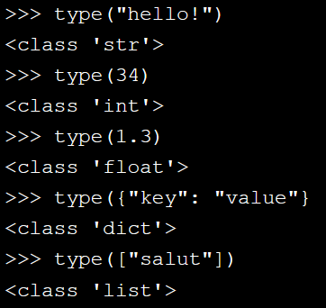
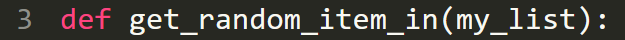

Vocabulaire
Affichage
- Texte
- # -*- coding: utf8 -*- = Première ligne pour gestion des accents
- return = Renvoi d'une valeur
-
- print("...") = Affichage d'un texte (imprimer)
- print("....", end = "") = Pas de retour à la ligne sans espace
- print=("") = aller à la ligne
- print("....", end = " ") = Pas de retour à la ligne avec esapce
- Chiffre
- print(1) = affichage de chiffe (sans "")
- print(1+1) = d'affichage d'un resultat d'équation
- print((2*3)-2) = règle de prioritée à respecter avec les parenthèses
- print(1, = end " ") = Pas de retour à la ligne
- 2**3 = 2 puissance 3
- 2//2 = Division en chiffre entier
- 14 % 5 = 4 = Modulo (division + reste de le division )
- == = Egalité pour un condition
- != = Inégalité
- Texte + Chiffre
- print ("j'ai ", âge, "je suis né le", date de naissance) = association de textes et de chiffres (, ) sur la même ligne avec un espace
- Liste
- liste = ["objet_00" , "objet_01" , ..ect ] = Succession de plusieurs objets
- liste [ 0 ] = Sélection de l'objet "objet_00"
- liste [ 0 ] = nouveau_item = Chanhement de valeur de l'item placé en "0"
- len(list) = Demande du nombre d'item sur une liste
- Tuples
- mes_coordonées = ( 0602010503 , "j.b@outlook.fr" ) = structure dont le nombre d'éléments ne bouge pas
- Dictionnaire
- Structure de données qui permet d'associer des objets deux à deux
- english_french_dict [ " un " ] = Selection de la valeur accordée à la clé " un "
- dictionnaire["01"][0] = Demande d'affichage de la première valeur de la clé "01"
- Demande de type
-

- Option d'affichage
- sep=" " = affichage entre les éléments
- end=" " = affichage de fin
Mouvement
- from robot import*
- from = Ciblage
- robot = Nom du module executant
- import * = Action
- A savoir que la formulation complète n'a pas besoin d être rappelée dans la suite du code
Boucle
- Simple :
- for = Introduction d'une action
- loop = Boucle
- in range(5): = Répétitionx5
- Imbriqée :
- Tant que :
- len(votes) : Fonction renvoyant une valeur dans un objet
- Pour chaque :
Mémorisation / Suppression d'une variable
- Mémorisation :
- Simple
- nbPiècesJaunes = chiffre associé : méthode "CamelCase"
- Booléenne
- riche = (nbPiecesJaunes > 10 ) : variable booléenne (vrai / faux)
- toujoursVrai = true = association d'un résultat booléen sur une variable
- Simple
- Supression :
- del ( nbPiècesJaunes )
- Règles de syntaxe :
- Caractères autorisés :
- Lettres majuscules
- Lettres minuscules
- Le caractère "_"
- L identifiant se caractérise de caractères collés
- Le premier caractère du nom d'une variable ne peut être un chiffre
- Mots clés du language ne peuvent être utilisés pour nommer une variable (accent autorisé)
- Calcules autorisés dans le champs du chifrre associé
- Caractères autorisés :
Quittez un programme
- pass = sortie de programme (demande de ne rien faire )
Méthodes
- Texte :
- "".capitalize() = Mettre la première lettre en maj
- "".split() = Séparation des charactères
- "".strip() = Affichage sans espaces
- "".upper() = Affichage en maj
- "".lower() = Affichage en min
- "{} a dit : {}".format("il", "non") = "il a dit non"
- Chiffre :
- ().is_integer() = Vérifie si un nombre est entier
- Liste :
- liste.index(item_01) = Demande du positionnement "item_01"
- liste.append(item) = Ajout d'un item à la fin d'une liste
- liste.insert(4, "item") = Inesrtion de l'item dans la liste en "4"
- liste.pop() = Suppresion du dernier élément d'une liste
- liste.remove(item_01) = Suppresion du premier élément d'une liste avec la valeur "item_01"
- Dictionnaire :
- dico.update( {"clé_01": ""} {"clé_02": ""}) = Changement d"une valeur via sa clé
- dico.pop("clé") = Suppression d'une valeur via sa clé
Modules
Un module est une extension ( à mettre dans les premières lignes de code ) permettant d'étendre les possibiltées en fonction des besoins
- Random :
- import random
- import = commande pour insérer un module
- random = Module permettant de fair un choix aléatoire dans une liste
-
variable = random.randint( 0, len(list) -1 )
- random.randit = mise en place de la méthode "randit" sur le module "random"
- ( 0, len(list) - 1 ) = Désignation de tous les éléments de la liste
- import random
- Json :
-
"JS OBJECT NOTATION", format de données permettant d'imbriquer des listes les unes dans les autres
- Pour lire des données via un fichiers "json" :
- Création d'un fichiers externe pour y placer les données
- Définir une fonction pour lire les valeurs du fichier extérieur avec une liste vide
- Utiliser le fichier externe en tant que fichier "f" via le bloc with
- Importer le module "json"
-
Associer à une variable la méthode json.load() pour charger les données d'un fichier "f" et les transformer en données "json"

- Créer une boucle "for" qui associe une clé pour chaque entrée dans la liste vide
- Demander le retour de la liste
- Définir une fonction qui choisira une un élément au hasard dans la liste "get_random_character"
- Pour lire des données via un fichiers "json" :

Programmes interactifs
Introduction
- nom = lireLigne() : Entrée de type texte
- année = lireEntier() : Entrée de type chiffre
- nbSachets = int(input()) : Récupère le premier entier de l'entrée (qui correspond au nombre de sachets) et le stocke dans la variable nbSachets, Permet de prendre un entier sur l'entrée
- int = Entier
- input = Entrée
- input("text affiché avant l'entrée")
- nbSachets = int(input()) : Récupère le premier entier de l'entrée (qui correspond au nombre de sachets) et le stocke dans la variable nbSachets, Permet de prendre un entier sur l'entrée
- A savoir :
- Toutes formules avec changement dans le temps dois se trouver dans la boucle qui la concerne
- On appelle portée d'une variable l'ensemble des endroits du programme où elle existe. En Python, la portée d'une variable s'étend donc dans tout le programme dès qu'elle reçoit sa première valeur.
La sortie n'est lue qu'une fois l'exécution terminée. On peut ainsi afficher une partie de la sortie tout de suite ou attendre un peu, c'est la même chose pour le système d'évaluation : l'important est de lire les données dans l'ordre et d'écrire les bons résultats dans l'ordre.
Conditionner une action
- Si :
- Si âge est inférieur à 10, La condition est rempli et l action indentée est validée
- >= : Symbole pour une condition supérieur ou égale
- == : Symbole pour une condition d'égalité
- Si (..) and (..) :
- Si (..) or (..)
- Si / Sinon :
- Sinon si:
- Structure de base
- Structure simplifié : elif
- Not
{kind=link}
Créer une fonction
- Assignation d'un nom unique :
- Assignation d'un paramètre :
Un paramètre est une variable que l'on ajoute à une fonction

Une fonction est un ensemble de commandes regroupées en un seul nom unique dans le but de les utiliser plusieurs fois dans un programme.
Les algorithmes
Vocabulaire
- Type de donnée :
- Nombres
- Chaînes de charactères
- Booléens : vrai / faux
- Structure de donnée :
- Definition :
- Différents types d'informations définis et utilisé dans un programme
- Rôle :
- Une structure permet de stocker plusieurs données de même type ou de types différents dans un seul conteneur (la structure). Une structure est composée de plusieurs champs, chaque champ correspondant à une donnée.
- Definition :
- Opération :
- Def :
- Utilisation possible de la structure de données ( créer / lire / modifier / supprimer )
- CRUD : Create Read Update Delete
- Les trois dernières dépendent également d’une autre opération : la recherche ! Il faut en effet trouver l’élément demandé dans une structure avant de pouvoir le lire, le modifier ou le supprimer.
- Def :
Tableaux
- Index :
Position associé à chaque élément dans le tableau (liste)
Attention, le premier élément de la liste est à l’index 0 et non 1
Liste chaînée
- Definition :
Ensemble de valeurs enregistrées dans des endroits différents de la mémoire. À la différence d’un tableau qui contient un nombre fixe d’éléments, la liste chaînée est très souple : on peut ajouter ou supprimer des éléments - Cellule :
Valeur d'une liste chaînée, chaque cellule est relié aux autres par des pointeurs- Cellule de tête : première cellule
- Cellule de queue : dernière cellule
- Pointeur :
Un pointeur est, de manière très schématisée, l’adresse d’un autre élément.Il s’agit d’une variable qui contient une adresse mémoire. Cela permet de savoir où est enregistrée une autre donnée - Rôle :
Une liste chaînée est un peu comme une chasse au trésor informatique. Votre première cellule est comme le premier indice : elle contient l’adresse vous permettant de vous rendre au second indice et ainsi de suite. Le dernier endroit visité n’a pas d’indice. L’informatique n’aimant pas le vide, nous dirons que le dernier élément d’une liste a un pointeur égal à 'valeur nulle' ('NULL' en C, 'None' en Python...) - Opération courante :
- Insertion en tête de liste
- Insertion en queue de liste :
L’ajout d’une cellule en queue de liste est un peu plus compliqué que l’insertion en tête de liste car il faut parcourir toute la liste avant de trouver la cellule dont le pointeur est nul - Retrouver une valeur en parcourant la liste
Étant donné que nous ne savons pas où se trouve la valeur recherchée, nous allons commencer par le premier élément de la liste, puis avancer jusqu’à le trouver. Retrouver une valeur demande de parcourir une partie (voire la totalité) de la liste avant de trouver une correspondance
- Table de hachage
- Definition :
Structure de donnée qui permet d'associer une valeur à une clé (mot ou chiffre) et non plus à un indice - Fonctionnement :
On les appelle également des dictionnaires car les tables de hachage fonctionnent de la même manière : elles associent une clé (un mot dans le cas d’un dictionnaire) à une valeur (la définition d’un mot).
- Definition :
Pile
- Definition :
Structure de donnée qui donne accès en priorité aux dernières données ajoutées. Ainsi, la dernière information ajoutée sera la première à en sortir - Exemple :
Vous empilez les données comme vous le feriez avec des t-shirts dans votre armoire, la seconde vient "au-dessus" de la première - Traitement de données LIFO (Last In First Out / dernier ajouté premier parti)
- Opérations courantes :
- Initialiser
- EstVide
- EstPlein
- AccederSommet
- Empiler
- Depiler
- Vider
- Détruire
File
- Definition :
Structure de donnée dans laquelle on accède aux éléments suivant la règle du premier arrivé premier sorti - Exemple :
En file d'attente,plus vous arrivez tôt et plus vous partez tôt - Triatement de donnée FIFO (First In First Out)
- Opérations courantes :
- Initialiser
- Estvide
- Estpleine
- AccederTete
- Enfiler
- Defiler
- Vider
- Detruire
Arbre binnaire
- Definition :
Structure analogue à une liste chaînée, sauf que chaque cellule possède jusqu’à deux suivants. Par convention, on convient d’appeler fils gauche et fils droit les deux fils d’un nœud. Le fils gauche et le fils droit d’un nœud peuvent ne pas exister (pointeur égal à NULL). L’accès à l’arbre est donné par un pointeur qui contient l’adresse de la racine - Fonctionnement :
- Cellule mère : Cellule parent (Première cellule mère compose la raçine)
- Cellule fille : Cellule enfant
- Noeud / Sommet : Terminologie pour une cellule
- Feuille : Noeud n'ayant pas de fils
Graphe
- Definition :
Ensemble de cellules reliées les unes aux autres non plus par un lien d’ascendance, comme dans le cas d’un arbre, mais par une relation. Visuellement, il s’agit d’un ensemble de sommets reliés par des arcs - Fonctionnement :
- Cercle : Représentation d'un élément du réseau
- Arc : Trait reliant les cercles
Triage des informations
- Tri à bulles
- Autre algorithme de tri
- Liste des différents tris sur Wikipédia
Complexité
La complexité algorithmique est un concept qui permet de comparer les algorithmes afin de trouver celui qui est le plus efficace
- Temporelle :
- Complexité exponentielle : 10( puissance (x) )
- Complexité linéaire : 10 * (x)
- Complexité en temps constant :
Quel que soit le nombre de variable, il prend toujours le même temps
- Spatiale :
Les notations sont les mêmes que pour la complexité temporelle mais elle concerne le poid du fichier lors du stokage des données
Récursivité
La récursivité est un concept qui fait référence à lui même dans son fonctionnement. Cela se retrouve dans tous les champs (artistique / littérature / peinture...)
- Récursivité croisé
Deux fonctions qui s' appelent mutuellement - Exemple :
Calcule d'une factorielle d'un entier naturel (n = 10) :
1 * 2 * 3 ......* 10 = 3628800- Cet algorithme ne s'arrête jamais ( (n = 3) 3 * 2 * 1 * 0 * -1 ... ect )
- if / else : On ajoute une instruction conditionnelle
return n*factorielle_recursive(n - 1) : Appel d'une fonction à l'interieur d'elle-même ( appel récursif), c'est obligatoire dans une instruction conditionnelle - Suite de Fibonacci
Liste de nombres entiers, on appelle un nombre de cette liste un terme et chaque terme est la somme des deux qui le précèdent.- Algorithme récursif naïf :
Algorithme "simple" très proche de notre pensée premièreQuand nous calculons la valeur d'un nombre, nous rélaisons trois opérations :
- fibonacci(n-1) : Une valeur en mémoire
- fibonnaci(n-2) : Une valeur en mémoire
- Ajout des deux précédentes valeurs
Chaque nouveau nombre demande deux fois plus de mémoire que son précédent
Sa compléxité est exponentielle : O(2^n) - Algorithme linéaire
Chaque nouveau nombre a besoin d'un seul niveau d'opération
Sa complexité est linéaire : O(n)
- Algorithme récursif naïf :
- Les piles d'appels
- L’ordinateur doit retenir le résultat de tous les calculs récursifs avant de finir sa boucle. Il utilise alors une pile d’appels (en anglais, stack). Celle-ci est gérée automatiquement par le système
- Lorsque la dernière fonction récursive est appelée, l’ordinateur dépile. Autrement dit, il va chercher dans la pile le dernier élément enregistré et ainsi de suite jusqu’à arriver en bas de la pile
- Programmer une fonction récursive
- Décomposer le problème en un ou plusieurs sous-problèmes du même type. On résout les sous-problèmes par des appels récursifs
- Les sous-problèmes doivent être de taille plus petite que le problème initial
- Enfin, la décomposition doit en fin de compte conduire à un élémentaire qui, lui, n’est pas décomposé en sous-problèmes (c’est la condition d’arrêt)
Structure d'une fonction récursive